GroupBy & Aggregation
Master the Split–Apply–Combine pattern, multi-column hierarchical grouping, named aggregations (.agg), row-preserving transformations (.transform), group filtering, and enterprise analytics dashboards.
1. Introduction: What is GroupBy?
Real-world data science mein aapke samne sabse common business questions aate hain:
- "College ke har department (CSE, IT, ECE) ka average marks kya hai?"
- "E-commerce store mein har product category (Electronics, Office Supplies) ne total kitna revenue generate kiya?"
- "Har city ke customers ka average order value kya hai?"
Agar aapke paas 50 alag-alag departments ya 200 product categories hain, toh har department ke liye alag se Boolean mask banana (df[df['dept'] == 'CSE']['marks'].mean()) aur manual loops chalana extremely slow, repetitive, aur error-prone hota hai!
Pandas is problem ko ek single, highly-optimized method se solve karta hai: df.groupby()!
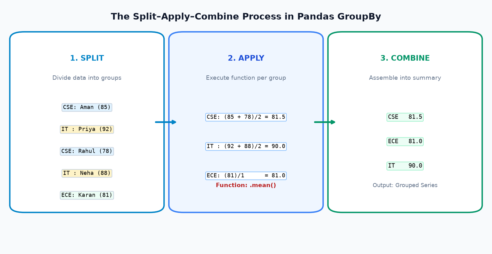
The Three Pillars: Split–Apply–Combine
GroupBy operation background mein 3 clear sequential phases follow karta hai:
- Split (Tukde Karna): Dataset ko specified categorical column ke unique values ke base par alag-alag internal buckets (groups) mein divide karta hai (jaise CSE ka alag bucket, IT ka alag).
- Apply (Calculation Lagana): Har group par independent mathematical calculation execute karta hai (jaise
mean(),sum(),max(), ya custom function). - Combine (Results Jodna): Sabhi individual group calculations ko assemble karke ek concise final summary DataFrame ya Series mein return karta hai.
Before vs After: Data Summarization
| Department | Student Name | Marks | Transformation Stage | Final Grouped Summary |
|---|---|---|---|---|
| CSE | Aman Sharma | 85 | SPLIT into CSE Group → APPLY mean([85, 78, 95]) = 86.0 |
CSE: 86.00 Marks (3 Students) |
| CSE | Rahul Verma | 78 | ||
| CSE | Sneha Kulkarni | 95 | ||
| IT | Priya Patel | 92 | SPLIT into IT Group → APPLY mean([92, 88]) = 90.0 |
IT: 90.00 Marks (2 Students) |
| IT | Neha Singh | 88 |
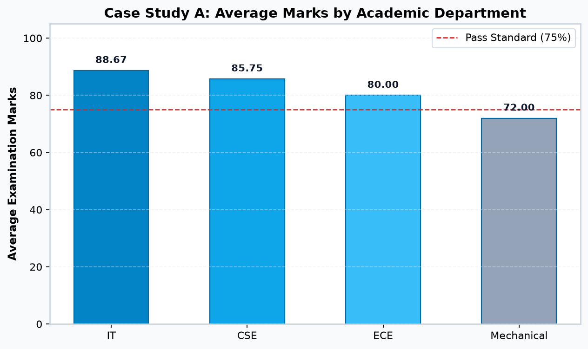
Example 1: Introductory College Department Average Marks
import pandas as pd
df_students = pd.DataFrame({
"department": ["CSE", "IT", "CSE", "IT", "ECE", "CSE", "ECE"],
"student": ["Aman", "Priya", "Rahul", "Neha", "Karan", "Sneha", "Vikram"],
"marks": [85, 92, 78, 88, 81, 95, 75]
})
# Group by department and calculate mean marks
dept_avg = df_students.groupby("department")["marks"].mean()
print("Department Average Marks Series:")
print(dept_avg)
Step-by-Step Explanation:
1. df.groupby("department") ne 7 rows ko 3 groups mein divide kiya: CSE (3 rows), ECE (2 rows), IT (2 rows).
2. ["marks"] ne calculation ke liye target numeric column pick kiya.
3. .mean() ne har group ka mathematical average nikala: CSE (85+78+95)/3 = 86.0, IT (92+88)/2 = 90.0, ECE (81+75)/2 = 78.0.
4. Output ek clean Series ban gaya jisme Department names automatically Index ban gaye!
Example 2: Introductory E-Commerce Category Total Revenue
E-commerce retail analytics mein category-wise sales volume calculate karne ka standard pattern:
import pandas as pd
df_sales = pd.DataFrame({
"category": ["Electronics", "Office Supplies", "Electronics", "Office Supplies", "Accessories"],
"product": ["Mouse", "Desk Mat", "Keyboard", "Chair", "USB Hub"],
"revenue": [2338.20, 2396.00, 3825.00, 7199.10, 2550.00]
})
# Calculate total revenue per category
cat_revenue = df_sales.groupby("category")["revenue"].sum()
print("Category Total Revenue:")
print(cat_revenue.map("₹{:,.2f}".format))
GroupBy karte waqt dimag mein yeh simple formula yaad rakhein:
DataFrame.groupby("KISPAR_GROUP_KARNA_HAI")["KIS_COLUMN_KO_CALCULATE_KARNA_HAI"].KAUNSA_FUNCTION()
2. Understanding the groupby() Object
Jab beginners pehli baar df.groupby("department") likhte hain, toh woh expect karte hain ki screen par turant ek summary table print ho jayegi. Lekin unhe screen par yeh output dikhta hai:
print(df.groupby("department"))
# Output: <pandas.core.groupby.generic.DataFrameGroupBy object at 0x000001>
Pandas mein df.groupby() ek Lazy Evaluation mechanism follow karta hai. Jab aap groupby() call karte hain, toh Pandas turant koi calculation nahi karta. Woh sirf memory mein ek mapping dictionary prepare karta hai ki kaunsi row kis group mein belong karti hai (e.g. {'CSE': [0, 2, 5], 'IT': [1, 3], 'ECE': [4, 6]}).
Jab tak aap aage koi mathematical aggregation function (jaise .mean(), .sum(), .agg()) attach nahi karte, tab tak Pandas CPU cycles waste nahi karta!
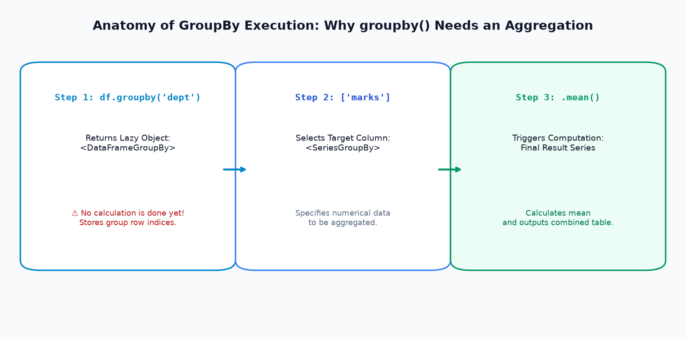
The Role of as_index Parameter
Default taur par Pandas grouping column ko output table ka Index bana deta hai. Lekin agar aap chahte hain ki grouping column ek standard regular column hi rahe (taaki aage charting ya SQL database mein insert karna aasan ho), toh as_index=False set karein:
| Configuration | Code Example | Result Structure | When to Use |
|---|---|---|---|
Default (as_index=True) |
df.groupby('dept')['marks'].mean() |
Series with dept as Index |
Quick terminal inspection, mathematical operations |
Flat Table (as_index=False) |
df.groupby('dept', as_index=False)['marks'].mean() |
DataFrame with 2 standard columns ([dept, marks]) |
Plotting charts, exporting to CSV, database insertion |
Example 1: as_index=True vs as_index=False in College Data
import pandas as pd
df_students = pd.DataFrame({
"dept": ["CSE", "IT", "CSE", "IT"],
"marks": [80, 90, 90, 92]
})
print("--- Default (as_index=True): Index par Dept ---")
s_res = df_students.groupby("dept")["marks"].mean()
print(s_res)
print("Type:", type(s_res))
print("
--- Flat (as_index=False): Regular DataFrame ---")
df_res = df_students.groupby("dept", as_index=False)["marks"].mean()
print(df_res)
print("Type:", type(df_res))Example 2: Controlling Group Key Ordering with sort=False
By default Pandas group keys ko alphabetically sort karta hai (sort=True). Lekin agar dataset pehle se kisi logical order mein sorted hai aur aap unnecessary sorting overhead avoid karke speed badhana chahte hain, toh sort=False use karein:
import pandas as pd
df_events = pd.DataFrame({
"city": ["Mumbai", "Delhi", "Mumbai", "Bengaluru"],
"sales": [500, 300, 700, 400]
})
# sort=False preserves the order in which groups first appeared
res_nosort = df_events.groupby("city", sort=False)["sales"].sum()
print(res_nosort)3. Core Aggregation Functions
Pandas GroupBy ke sath multiple mathematical functions natively integrated hote hain jo internal C-code routines par execute hote hain. Har aggregation function ek specific statistical objective solve karta hai.
Method Comparison Matrix
| Aggregation Function | Statistical Meaning | Missing Values Behavior | Real-Life Business Example |
|---|---|---|---|
.sum() |
Sum of all values in group | Skips NaNs (treats as 0) | Category-wise Total Revenue calculation |
.mean() |
Mathematical Average (sum / count) | Skips NaNs (divides only by valid count) | Department Average Examination Scores |
.median() |
50th percentile middle value | Skips NaNs (robust to extreme outliers) | Median Salary / Order Value across cities |
.min() |
Lowest observed value | Skips NaNs | Minimum product price in a category |
.max() |
Highest observed value | Skips NaNs | Department topper's highest score |
.count() |
Count of non-missing cells in target column | Excludes NaNs! | Students who actually submitted exam marks |
.size() |
Total row count of the group | Includes NaNs! | Total enrolled students (whether marks present or not) |
.nunique() |
Distinct non-missing unique values count | Excludes NaNs by default | Unique cities where customers ordered from |
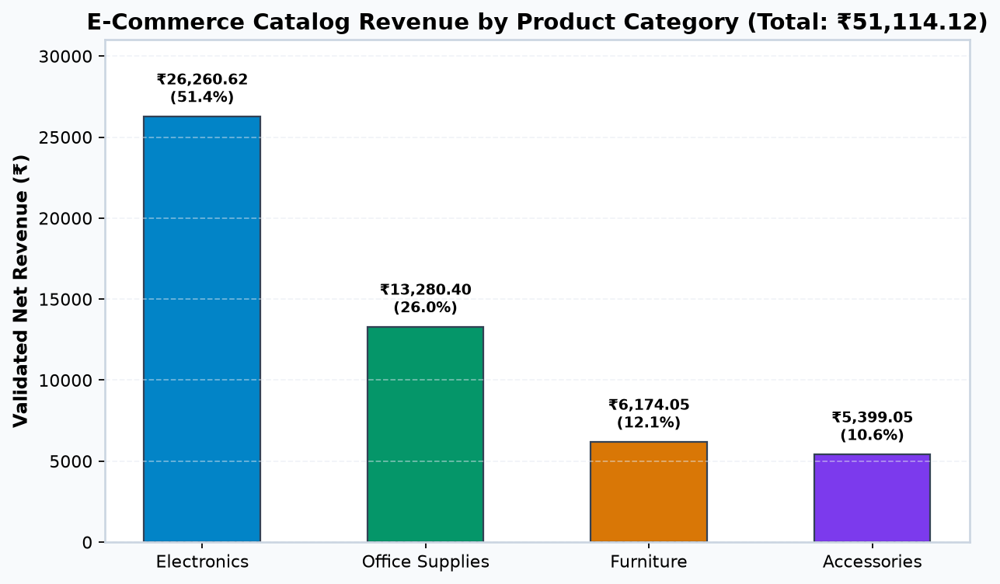
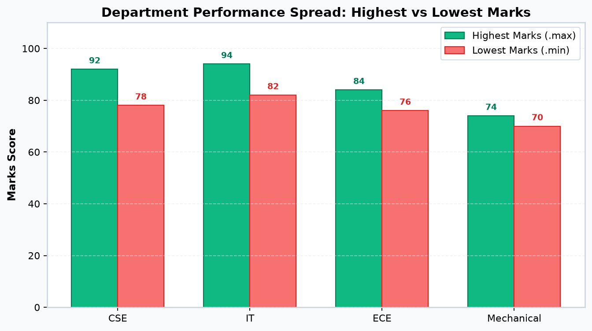
Example A: Department-Level Multi-Function Statistical Audit
import pandas as pd
import numpy as np
df_students = pd.DataFrame({
"dept": ["CSE", "CSE", "CSE", "IT", "IT", "ECE", "ECE"],
"city": ["Lucknow", "Delhi", "Lucknow", "Varanasi", "Lucknow", "Delhi", None],
"marks": [85, 92, 78, 90, 82, 76, np.nan]
})
g = df_students.groupby("dept")
print("Average Marks:")
print(g["marks"].mean().round(2))
print("
Highest Marks:")
print(g["marks"].max())
print("
Evaluated Marks Count (.count ignores NaN):")
print(g["marks"].count())
print("
Total Enrolled Rows (.size counts all):")
print(g.size())
print("
Distinct Student Cities (.nunique):")
print(g["city"].nunique())Example B: E-Commerce Category Volume, Price Spread & Distinct Products
E-commerce retail analytics mein category health check karne ke liye multiple metrics ko independently inspect karna:
import pandas as pd
df_catalog = pd.DataFrame({
"category": ["Electronics", "Electronics", "Electronics", "Office", "Office"],
"product": ["Mouse", "Keyboard", "Mouse", "Desk Mat", "Chair"],
"price": [1299.0, 4500.0, 1299.0, 599.0, 7999.0]
})
g_cat = df_catalog.groupby("category")
print("Total Category Value:", g_cat["price"].sum())
print("Average Unit Price:", g_cat["price"].mean().round(2))
print("Distinct Products Sold:", g_cat["product"].nunique())4. Grouping by Multiple Columns
Real-world business analytics mein single-level grouping kaafi nahi hoti. Business leadership aksar multi-dimensional breakdown maangti hai:
- "Department-wise performance kaisa hai, aur har department ke andar Semester 1 vs Semester 2 ka difference kya hai?"
- "Category-wise total sales kitni hai, aur har category mein Mumbai vs Delhi vs Bengaluru ka contribution kitna hai?"
Multiple columns par grouping karne ke liye hum .groupby() ke andar list of column names pass karte hain:
df.groupby(["department", "semester"])["marks"].mean()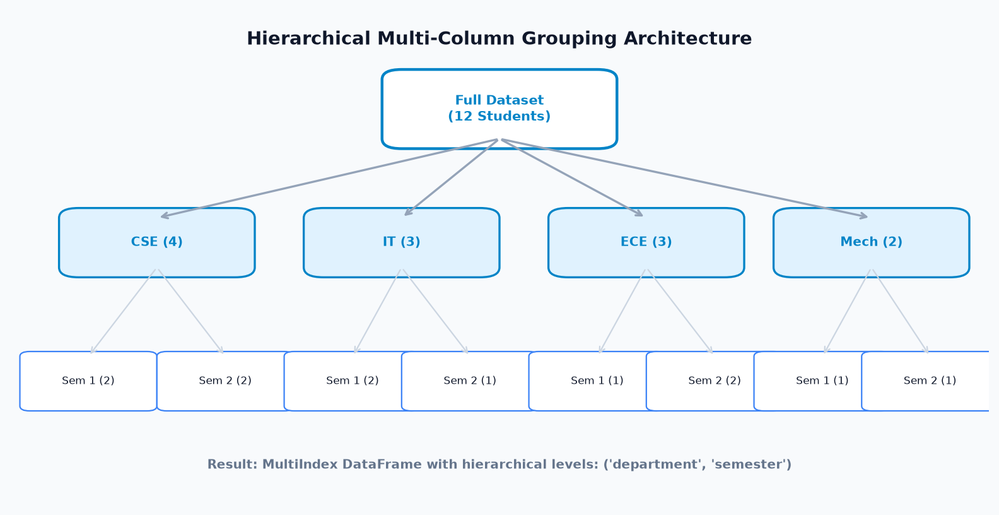
Understanding the Resulting MultiIndex & reset_index()
Jab aap do ya zyada columns se grouping karte hain, toh output Series ka Index MultiIndex (Hierarchical Index) ban jata hai, jisme har row ka index ek tuple hota hai: ("CSE", "Sem 1").
MultiIndex ko regular flat table mein convert karne ke liye hum .reset_index() call karte hain:
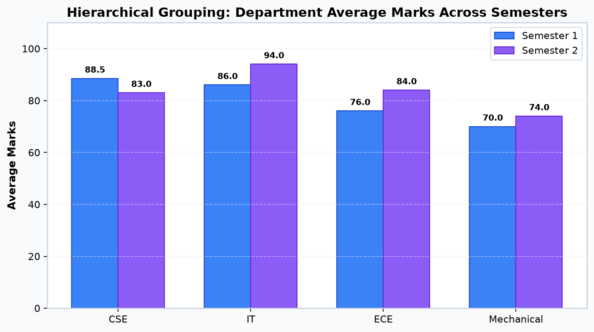
Example 1: Average Marks by Department and Semester
import pandas as pd
df_multi = pd.DataFrame({
"department": ["CSE", "CSE", "CSE", "IT", "IT", "ECE"],
"semester": ["Sem 1", "Sem 1", "Sem 2", "Sem 1", "Sem 2", "Sem 1"],
"marks": [80, 90, 85, 75, 95, 88]
})
# Multi-column groupby with flat reset_index()
summary_flat = (
df_multi.groupby(["department", "semester"])["marks"]
.mean()
.reset_index()
)
print(summary_flat)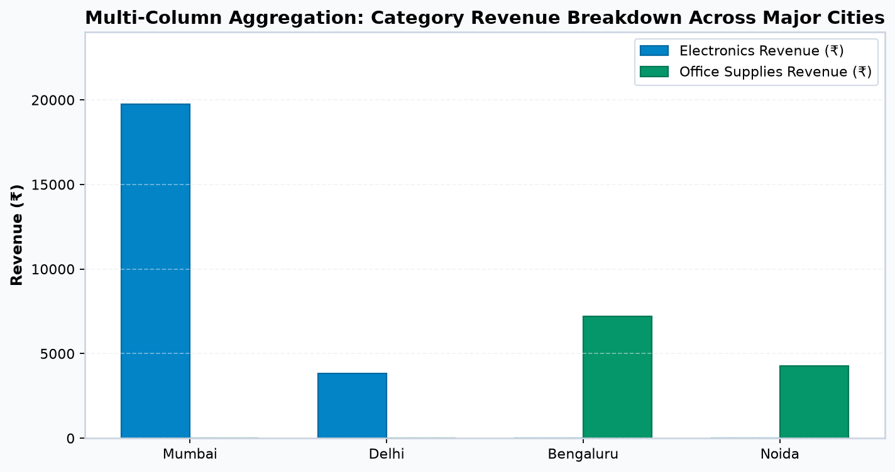
Example 2: Sales Revenue by Product Category and Customer City
import pandas as pd
df_sales = pd.DataFrame({
"category": ["Electronics", "Electronics", "Office", "Office", "Electronics"],
"city": ["Mumbai", "Delhi", "Bengaluru", "Noida", "Mumbai"],
"revenue": [2338.20, 3825.00, 7199.10, 4283.30, 17398.32]
})
city_cat_sales = (
df_sales.groupby(["category", "city"], as_index=False)["revenue"]
.sum()
)
print(city_cat_sales)5. Multiple Aggregations with .agg()
Real enterprise reporting mein aap sirf ek single metric (jaise sirf mean) calculate nahi karte. Management ko ek sath multiple numbers chahiye hote hain: "Student count kitna hai, Average marks kya hai, Highest marks kya hai, aur Lowest marks kya hai?"
Pandas provides the powerful .agg() method. Modern Pandas (version 0.25+) mein sabse clean aur recommended syntax hai: Named Aggregation!
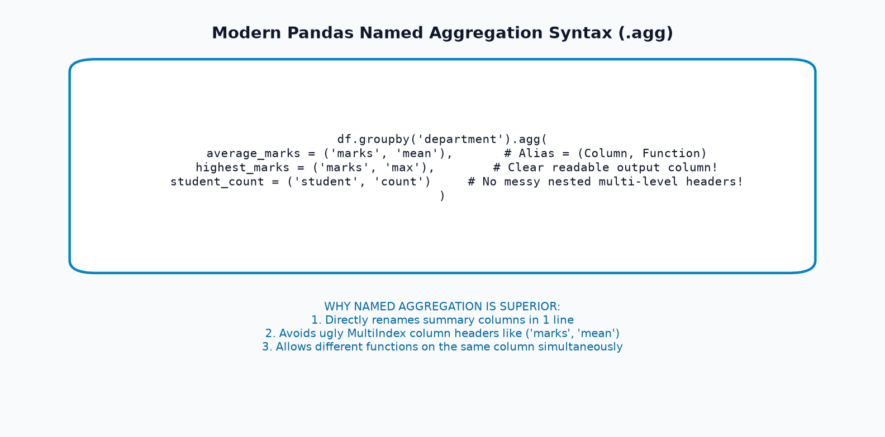
Named Aggregation Syntax Structure
df.groupby("department").agg(
custom_col_name = ("target_column", "aggregation_function")
)Why Named Aggregation is Superior
- Zero Header MultiIndex Mess: Old dictionary syntax (
agg({'marks': ['mean', 'max']})) do-level nested column headers banata tha (('marks', 'mean')) jo indexing mein headache create karte the. Named aggregation direct flat clean column names deta hai! - Different Functions on Same Column: Aap ek hi column (
marks) par simultaneouslymean,max, aurminnikaal sakte hain aur har ek ko custom readable name de sakte hain.
Example A: Comprehensive College Department Performance Summary
import pandas as pd
df_college = pd.DataFrame({
"department": ["CSE", "CSE", "CSE", "IT", "IT", "ECE"],
"student": ["Aman", "Rahul", "Sneha", "Priya", "Neha", "Karan"],
"marks": [85, 78, 95, 92, 88, 81]
})
summary = df_college.groupby("department").agg(
student_count=("student", "count"),
average_marks=("marks", "mean"),
highest_marks=("marks", "max"),
lowest_marks=("marks", "min")
).reset_index()
print(summary)Example B: E-Commerce Category Performance Report
import pandas as pd
df_orders = pd.DataFrame({
"category": ["Electronics", "Electronics", "Accessories", "Office", "Office"],
"order_id": ["O1", "O2", "O3", "O4", "O5"],
"quantity": [2, 1, 3, 4, 1],
"revenue": [2338.20, 3825.00, 2550.00, 2396.00, 7199.10]
})
ecom_report = df_orders.groupby("category").agg(
orders=("order_id", "count"),
units_sold=("quantity", "sum"),
total_sales=("revenue", "sum"),
avg_order=("revenue", "mean")
).reset_index()
print(ecom_report)6. Counting Records, Nulls & Distinct Values
Data analytics interviews aur production data quality audits mein sabse zyada pucha jane wala technical question hai: "Pandas GroupBy mein .size(), .count(), aur .nunique() ke beech kya exact difference hai?"
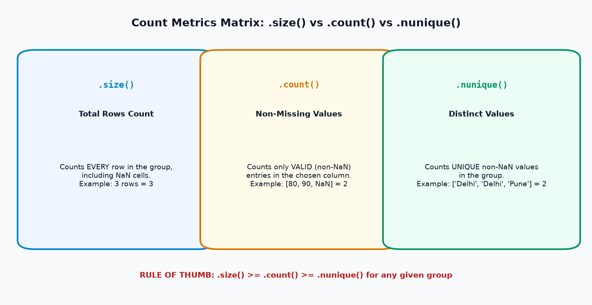
The Three Counting Behaviors Explained
.size(): Pure group ki total rows count karta hai. Isko is baat se koi matlab nahi hota ki cells ke andarNaNhai ya valid data. Yeh group ka true row physical footprint hota hai..count(): Specified column ke andar sirf non-missing (valid) values ko count karta hai. Agar kisi student ke marksNaNhain, tohcount()use ignore kar dega..nunique(): Group ke andar distinct unique values count karta hai. Duplicate values ko filter kar deta hai.
Agar aapne kisi group mein missing values dekhni hain, toh hamesha compare karein: g.size() - g['col'].count()!
Jitna difference aayega, utne hi records us group mein missing hain!
Comparison Table on a Sample Group Containing Missing Values
Maan lijiye ECE department mein 3 students hain: [Pooja (76), Rohan (84), Zoya (NaN)], aur unke entered cities hain ["Delhi", "Mumbai", None]:
| Metric Code | Target Column | Values Evaluated | Result | Interpretation |
|---|---|---|---|---|
g.size() |
Entire DataFrame | 3 rows | 3 | Total students registered in ECE |
g['marks'].count() |
marks |
[76, 84, NaN] |
2 | Students who actually submitted marks (Zoya ignored!) |
g['city'].nunique() |
city |
["Delhi", "Mumbai", None] |
2 | Unique cities (None ignored by default) |
g['city'].nunique(dropna=False) |
city |
["Delhi", "Mumbai", None] |
3 | Unique cities counting missing as a distinct category |
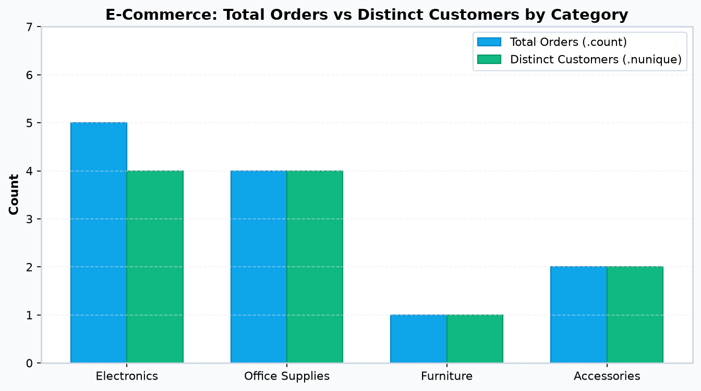
Example 1: Auditing Missing Marks and Cities in Student Roster
import pandas as pd
import numpy as np
df_roster = pd.DataFrame({
"dept": ["ECE", "ECE", "ECE", "CSE", "CSE"],
"student": ["Pooja", "Rohan", "Zoya", "Aman", "Rahul"],
"city": ["Delhi", "Mumbai", None, "Delhi", "Delhi"],
"marks": [76, 84, np.nan, 85, 78]
})
g_roster = df_roster.groupby("dept")
audit = pd.DataFrame({
"total_rows_size": g_roster.size(),
"evaluated_marks_count": g_roster["marks"].count(),
"missing_marks": g_roster.size() - g_roster["marks"].count(),
"unique_cities": g_roster["city"].nunique()
})
print(audit)Example 2: Counting Orders vs Distinct Customers in E-Commerce
import pandas as pd
df_orders = pd.DataFrame({
"category": ["Electronics", "Electronics", "Electronics", "Office", "Office"],
"order_id": ["O101", "O102", "O103", "O104", "O105"],
"customer_id": ["CUST_1", "CUST_2", "CUST_1", "CUST_3", "CUST_4"]
})
res = df_orders.groupby("category").agg(
total_orders=("order_id", "count"),
distinct_customers=("customer_id", "nunique")
)
print(res)
Notice: Electronics category mein 3 orders the, lekin customer sirf 2 the (CUST_1 ne 2 baar order kiya). Isliye total_orders=3 aur distinct_customers=2!
7. transform() versus agg()
Data analytics aur machine learning feature engineering mein .transform() ek game-changing tool hai. Beginners aksar agg() aur transform() ko lekar confuse rehte hain.
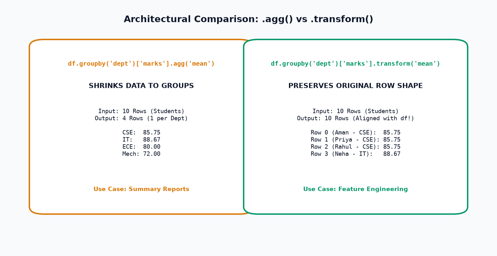
The Fundamental Architectural Difference
| Property | .agg() |
.transform() |
|---|---|---|
| Output Shape | Shrinks data: Exactly $N$ rows (jahan $N$ = unique groups count). | Preserves data: Exactly original DataFrame ki length ($M$ rows). |
| Index Alignment | Group keys naye Index ban jaate hain. | Original DataFrame ke Index ke sath perfectly aligned rehta hai. |
| Direct Assignment | df['group_avg'] = df.groupby().agg() FAILS! (Shape mismatch error). |
df['group_avg'] = df.groupby().transform() WORKS! |
| Primary Use Case | Executive summary tables, high-level dashboards. | Feature engineering, relative comparisons, calculating deviations. |
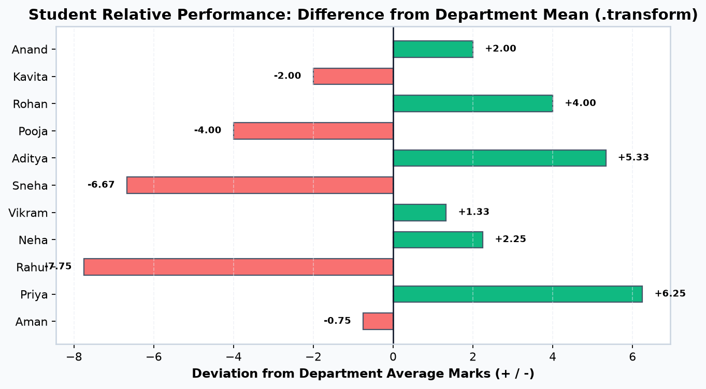
Example A: Student Marks Deviation from Department Average
Hume pata karna hai ki har student apne department ke average se kitne marks aage ya peeche hai:
import pandas as pd
df_class = pd.DataFrame({
"student": ["Aman", "Rahul", "Priya", "Neha"],
"dept": ["CSE", "CSE", "IT", "IT"],
"marks": [80, 90, 85, 95]
})
# Broadcast department mean to every original row
df_class["dept_avg"] = df_class.groupby("dept")["marks"].transform("mean")
# Calculate individual deviation
df_class["difference"] = df_class["marks"] - df_class["dept_avg"]
print(df_class)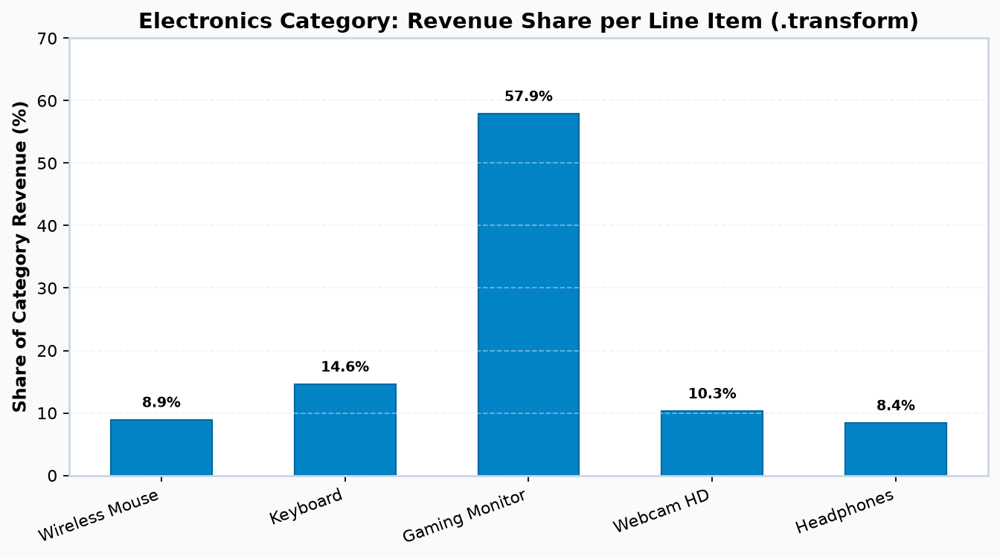
Example B: E-Commerce Transaction Share of Category Revenue
Har transaction ki category-level total sales nikalna aur calculate karna ki us transaction ne category ka kitna percentage banaya:
import pandas as pd
df_sales = pd.DataFrame({
"item": ["Mouse", "Monitor", "Keyboard", "Pen", "Notebook"],
"category": ["Electronics", "Electronics", "Electronics", "Stationery", "Stationery"],
"sales": [1000.0, 6000.0, 3000.0, 200.0, 800.0]
})
# Attach total category revenue to every row
df_sales["cat_total"] = df_sales.groupby("category")["sales"].transform("sum")
# Compute percentage share
df_sales["share_pct"] = (df_sales["sales"] / df_sales["cat_total"]) * 100
print(df_sales)8. Group Filtering with .filter()
Standard filtering (jaise df[df['marks'] > 80]) individual rows par apply hoti hai. Lekin business analytics mein aksar requirement hoti hai: Whole Group Level Filter!
- "Sirf un departments ke students ko retain karo jisme at least 3 students enrolled hain!"
- "Sirf un product categories ko analyze karo jinki total category sales ₹10,000 se zyada hai!"
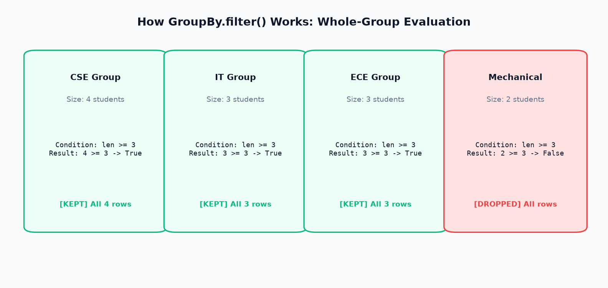
How .filter() Operates
df.groupby("col").filter(func) mein passed function ko pura group (ek mini-DataFrame g) pass hota hai. Function ko ek Boolean (True/False) return karna hota hai:
- Agar condition
Trueevaluate hoti hai, toh us group ki saari rows final DataFrame mein retain ho jati hain. - Agar condition
Falsehoti hai, toh us group ki saari rows drop ho jati hain.
Example 1: Filtering Academic Departments by Enrolled Student Size
import pandas as pd
df_students = pd.DataFrame({
"dept": ["CSE", "CSE", "CSE", "IT", "IT", "Mechanical"], # CSE: 3, IT: 2, Mech: 1
"student": ["Aman", "Rahul", "Sneha", "Priya", "Neha", "Karan"],
"marks": [85, 78, 95, 92, 88, 70]
})
# Retain only departments having at least 3 students
large_depts = df_students.groupby("dept").filter(lambda g: len(g) >= 3)
print("Filtered DataFrame (Only CSE satisfies len >= 3):")
print(large_depts)Example 2: Filtering E-Commerce Categories by Revenue Threshold
import pandas as pd
df_retail = pd.DataFrame({
"category": ["Electronics", "Electronics", "Accessories", "Office", "Office"],
"item": ["Mouse", "Monitor", "Stand", "Paper", "Pen"],
"sales": [2000, 15000, 1200, 400, 300]
})
# Keep categories whose total sales exceed ₹5,000 (Only Electronics: 17k)
top_cats = df_retail.groupby("category").filter(lambda g: g["sales"].sum() > 5000)
print(top_cats)9. Custom Aggregation Functions
Jab Pandas ke built-in standard functions (jaise mean, sum, std) aapke custom business requirements ko satisfy nahi karte, tab aap Custom Aggregations likh sakte hain.
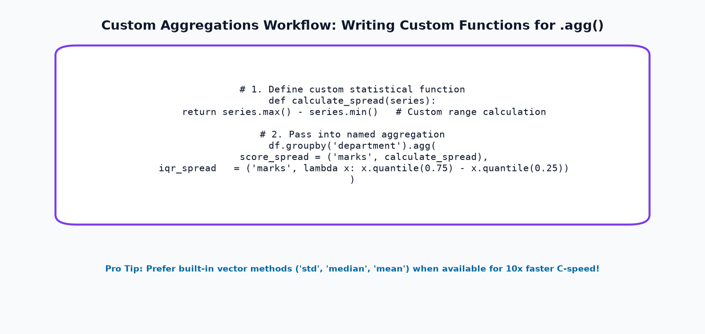
How Custom Aggregations Work
Custom function mein passed argument ek Pandas Series hoti hai jo us specific group ki values represent karti hai. Function ko ek single scalar value return karni hoti hai:
Example 1: Calculating Department Marks Spread (Range = Max - Min)
import pandas as pd
df_scores = pd.DataFrame({
"dept": ["CSE", "CSE", "CSE", "IT", "IT"],
"marks": [70, 85, 95, 80, 92]
})
# Custom statistical function
def calculate_range(series):
return series.max() - series.min()
summary = df_scores.groupby("dept").agg(
marks_range=("marks", calculate_range),
mean_marks=("marks", "mean")
).reset_index()
print(summary)Example 2: Custom Lambda for Interquartile Range (IQR)
import pandas as pd
df_prices = pd.DataFrame({
"category": ["Tech", "Tech", "Tech", "Tech", "Stationery", "Stationery"],
"price": [500, 1200, 2500, 9000, 20, 80]
})
iqr_report = df_prices.groupby("category").agg(
iqr_spread=("price", lambda x: x.quantile(0.75) - x.quantile(0.25)),
median_price=("price", "median")
).reset_index()
print(iqr_report)10. Sorting Grouped Summaries
GroupBy ke baad jo summary table banta hai, raw state mein woh aksar grouping column ke alphabetical order ya original appearance order mein arrange hota hai. Lekin business presentation aur decision-making ke liye hume hamesha Sorted Rankings chahiye hoti hain—jaise "Highest revenue generating department", "Top 5 products by units sold", ya "Lowest performing branch".
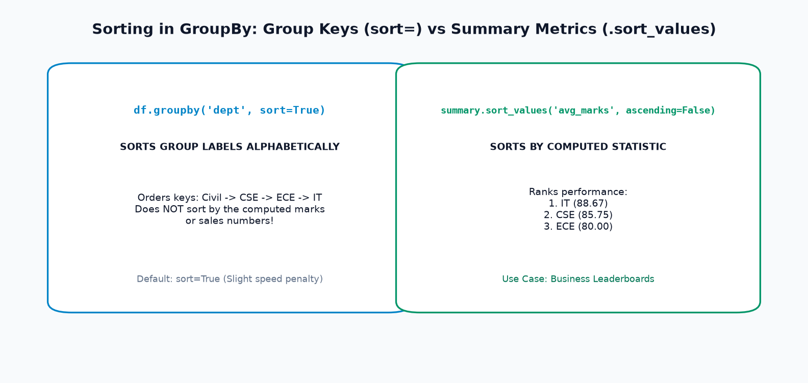
The Three Pillars of Sorting Grouped Data
- Pillar 1:
.sort_values(by=..., ascending=False): Aggregated summary table ke kisi bhi calculated column (jaise total revenue ya average marks) par ranking lagana. - Pillar 2:
.sort_index(ascending=...): Agar aapneas_index=Truerakha hai aur aap group labels (keys) ko alphabetically sort karna chahte hain. - Pillar 3: Multi-Column Sorting: Pehle ek broad category par sort karna, fir uske andar revenue ya count par tie-breaker sorting apply karna.
Agar summary table standard flat DataFrame ban chuka hai, toh .sort_values(by="metric", ascending=False) effortlessly kaam karta hai bina kisi index confusion ke!
Example 1: Single Metric Ranking (Highest to Lowest Revenue)
Maan lijiye hamare paas multi-category orders hain aur hume categories ko total revenue ke hisaab se descending order mein rank karna hai:
import pandas as pd
df_orders = pd.DataFrame({
"category": ["Electronics", "Clothing", "Books", "Electronics", "Clothing"],
"revenue": [5000, 2000, 1500, 7000, 1000]
})
# Step 1: Group and aggregate total revenue
cat_summary = df_orders.groupby("category", as_index=False)["revenue"].sum()
# Step 2: Sort by revenue descending (highest first)
sorted_summary = cat_summary.sort_values(by="revenue", ascending=False).reset_index(drop=True)
# Step 3: Add rank column
sorted_summary["rank"] = range(1, len(sorted_summary) + 1)
print(sorted_summary)Example 2: Multi-Column Sorting (Department Ascending + Avg Marks Descending)
Hierarchical grouping mein aksar hum chahte hain ki Department alphabetically A-to-Z arrange ho, lekin har department ke andar semesters unke average marks ke according Highest-to-Lowest dikhein:
import pandas as pd
df_multi = pd.DataFrame({
"dept": ["CSE", "CSE", "IT", "IT"],
"semester": ["Sem 1", "Sem 2", "Sem 1", "Sem 2"],
"avg_score": [84.5, 88.0, 91.5, 86.0]
})
# Multi-column sort: dept ascending (A-Z), avg_score descending (High-Low)
multi_sorted = df_multi.sort_values(
by=["dept", "avg_score"],
ascending=[True, False]
).reset_index(drop=True)
print(multi_sorted)11. Missing Values in GroupBy Operations
Real-world data clean aur sanitized nahi hota. Missing values (NaN ya None) do jagahon par aa sakti hain:
- Grouping Keys ke andar: Jab us column mein missing values hon jiske basis par aap
groupby()kar rahe hain. - Aggregated Numeric Columns ke andar: Jab group keys toh valid hain, lekin target values (marks, price, salary) mein
NaNhai.
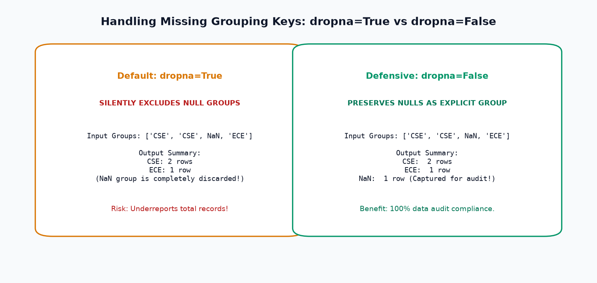
1. The Default Exclusion Trap: dropna=True
By default, Pandas ka groupby() grouping keys mein aane wale saare NaN records ko khamoshi se discard (drop) kar deta hai!
Agar aapke paas 100 students hain aur 15 students ka department assign nahi hua hai (NaN), toh default df.groupby('dept').count() mein woh 15 students gayab ho jayenge!
Agar aap accounting ya audit reporting kar rahe hain, toh grouping key mein missing values hone par total company revenue match nahi karegi!
Solution: Use df.groupby("dept", dropna=False) to retain the NaN category as an explicit group!
Code Demonstration: dropna=True vs dropna=False
import pandas as pd
import numpy as np
df_missing_keys = pd.DataFrame({
"dept": ["CSE", "CSE", np.nan, np.nan, "ECE"],
"marks": [80, 90, 75, 85, 70]
})
# Default behavior: dropna=True (NaN group is dropped!)
summary_default = df_missing_keys.groupby("dept")["marks"].count()
print("--- Default GroupBy (dropna=True) ---")
print(summary_default)
# Modern Pandas behavior: dropna=False (NaN group is preserved!)
summary_preserved = df_missing_keys.groupby("dept", dropna=False)["marks"].count()
print("
--- Preserved GroupBy (dropna=False) ---")
print(summary_preserved)2. Missing Values in Aggregated Columns (How Math Works)
Jab numeric column mein missing values hoti hain (jaise student marks mein NaN):
mean()sirf valid non-null numbers ka sum karke unhi ke count se divide karta hai (numerator aur denominator dono se NaN excluded).sum()NaN ko0ki tarah treat karke valid numbers ka sum return karta hai (agar pure group mein saare NaN hain toh 0 return hota hai).count()sirf valid non-null count karta hai.size()NaN samet total rows count karta hai.
3. The Unique ID Grouping Anti-Pattern
Kabhi bhi aisi column par groupby() na karein jisme har row unique ho (jaise user_id, order_id, ya timestamp)!
Agar DataFrame mein 10,000 rows hain aur aapne df.groupby("order_id").mean() kar diya, toh Pandas 10,000 alag-alag 1-row groups create karega.
Isse memory spike ho jayegi aur aggregation ka koi statistical fayda nahi hoga!
12. Real-Life Case Study A: College Performance Analytics
Aaiye ab tak seekhe gaye saare concepts ko ek realistic College Academic Performance & Attendance Analytics project mein apply karte hain. Hamare paas 12 engineering students ka dataset hai jo multiple departments, semesters, aur home cities se belong karte hain.
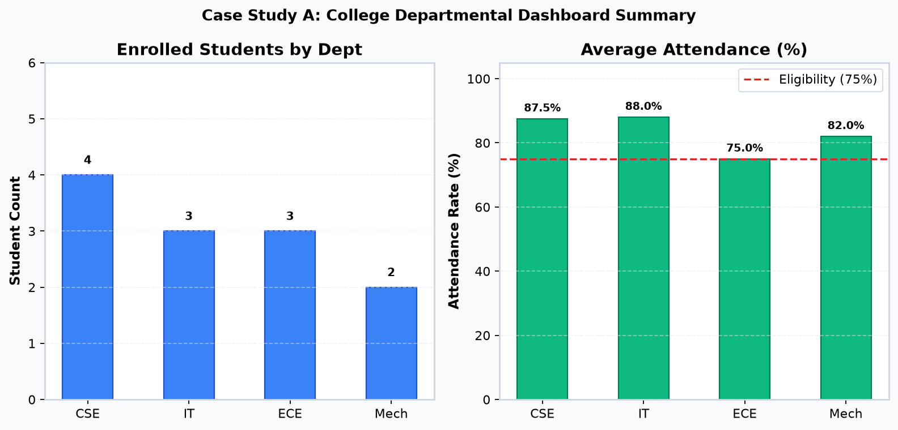
Dataset Specification (12 Students)
| Student ID | Name | Department | Semester | City | Marks | Attendance (%) |
|---|---|---|---|---|---|---|
| STU001 | Aman | CSE | Sem 1 | Lucknow | 85 | 92% |
| STU002 | Priya | CSE | Sem 1 | Delhi | 92 | 88% |
| STU003 | Rahul | CSE | Sem 2 | Lucknow | 78 | 75% |
| STU004 | Neha | CSE | Sem 2 | Mumbai | 88 | 95% |
| STU005 | Vikram | IT | Sem 1 | Varanasi | 90 | 85% |
| STU006 | Sneha | IT | Sem 1 | Lucknow | 82 | 90% |
| STU007 | Aditya | IT | Sem 2 | Delhi | 94 | 89% |
| STU008 | Pooja | ECE | Sem 1 | Delhi | 76 | 78% |
| STU009 | Rohan | ECE | Sem 2 | Mumbai | 84 | 82% |
| STU010 | Zoya | ECE | Sem 2 | Pune | NaN (Medical) | 65% |
| STU011 | Kavita | Mechanical | Sem 1 | Lucknow | 70 | 80% |
| STU012 | Anand | Mechanical | Sem 2 | Delhi | 74 | 84% |
Complete 6-Step End-to-End Analytics Pipeline
import pandas as pd
import numpy as np
# Step 1: Load student records
df_college = pd.DataFrame({
"student_id": [f"STU{i:03d}" for i in range(1, 13)],
"student": ["Aman", "Priya", "Rahul", "Neha", "Vikram", "Sneha", "Aditya", "Pooja", "Rohan", "Zoya", "Kavita", "Anand"],
"department": ["CSE", "CSE", "CSE", "CSE", "IT", "IT", "IT", "ECE", "ECE", "ECE", "Mechanical", "Mechanical"],
"semester": ["Sem 1", "Sem 1", "Sem 2", "Sem 2", "Sem 1", "Sem 1", "Sem 2", "Sem 1", "Sem 2", "Sem 2", "Sem 1", "Sem 2"],
"city": ["Lucknow", "Delhi", "Lucknow", "Mumbai", "Varanasi", "Lucknow", "Delhi", "Delhi", "Mumbai", "Pune", "Lucknow", "Delhi"],
"marks": [85, 92, 78, 88, 90, 82, 94, 76, 84, np.nan, 70, 74],
"attendance": [92, 88, 75, 95, 85, 90, 89, 78, 82, 65, 80, 84]
})
# Step 2: Multi-metric department summary with named aggregation
dept_summary = df_college.groupby("department").agg(
total_enrolled=("student", "count"),
exams_evaluated=("marks", "count"),
avg_marks=("marks", "mean"),
highest_marks=("marks", "max"),
lowest_marks=("marks", "min"),
avg_attendance=("attendance", "mean"),
origin_cities=("city", "nunique")
).reset_index()
# Step 3: Broadcast department average back using transform()
df_college["dept_avg"] = df_college.groupby("department")["marks"].transform("mean")
df_college["score_diff"] = df_college["marks"] - df_college["dept_avg"]
# Step 4: Rank departments by academic performance
ranked_depts = dept_summary.sort_values(by="avg_marks", ascending=False).reset_index(drop=True)
ranked_depts["rank"] = range(1, len(ranked_depts) + 1)
print("=== DEPARTMENT PERFORMANCE RANKING ===")
print(ranked_depts[["rank", "department", "avg_marks", "avg_attendance", "total_enrolled"]])
# Step 5: Filter departments with >= 3 students
major_departments = df_college.groupby("department").filter(lambda g: len(g) >= 3)
print(f"
Major Departments retained rows: {len(major_departments)} (Mechanical filtered out)")Academic Insights Derived from the Data
| Department | Mean Marks | Mean Attendance | Marks Spread (Range) | Key Finding & Administrative Action |
|---|---|---|---|---|
| IT | 88.67 | 88.0% | 12 pts (82 - 94) | Consistently high performers; highest batch average across college. |
| CSE | 85.75 | 87.5% | 14 pts (78 - 92) | Strong performance led by Neha (88) and Priya (92). Good attendance. |
| ECE | 80.00 | 75.0% | 8 pts (76 - 84) | Zoya was absent due to medical leave; lowest attendance (75.0%). Requires remedial session. |
| Mechanical | 72.00 | 82.0% | 4 pts (70 - 74) | Small batch size (2 students); lowest test average despite decent attendance. Curriculum review needed. |
13. Real-Life Case Study B: E-Commerce Sales Analytics
Humara doosra real-life case study ek multi-category online retail platform ka sales analytics engine build karna hai. Yahan hum commercial sales data par revenue formulas calculate karenge, discount leakage inspect karenge, aur categories ke beech revenue share distribution evaluate karenge.
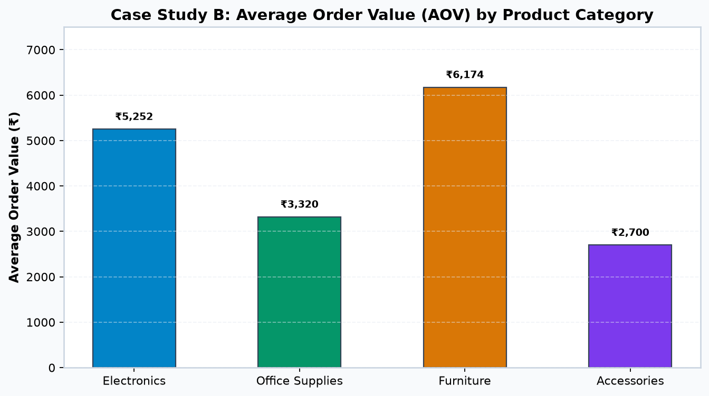
Dataset Specification & Explicit Revenue Calculation
Har individual order line-item ka net revenue hum calculated formula se compute karte hain:
revenue = quantity × price × (1 - discount)
| Order ID | Product | Category | City | Qty | List Price | Discount | Net Revenue (₹) |
|---|---|---|---|---|---|---|---|
| ORD101 | Wireless Mouse | Electronics | Mumbai | 2 | ₹1,299.00 | 10% | ₹2,338.20 |
| ORD102 | Mechanical Keyboard | Electronics | Delhi | 1 | ₹4,500.00 | 15% | ₹3,825.00 |
| ORD103 | USB-C Hub | Accessories | Bengaluru | 3 | ₹850.00 | 0% | ₹2,550.00 |
| ORD104 | Gaming Monitor | Electronics | Mumbai | 1 | ₹18,999.00 | 20% | ₹15,199.20 |
| ORD105 | Laptop Stand | Accessories | Delhi | 2 | ₹1,499.50 | 5% | ₹2,849.05 |
| ORD106 | Webcam HD | Electronics | Kolkata | 1 | ₹2,999.00 | 10% | ₹2,699.10 |
| ORD107 | Desk Mat | Office Supplies | Noida | 4 | ₹599.00 | 0% | ₹2,396.00 |
| ORD108 | Headphones | Electronics | Mumbai | 1 | ₹2,499.00 | 12% | ₹2,199.12 |
| ORD109 | Office Chair | Office Supplies | Bengaluru | 1 | ₹7,999.00 | 10% | ₹7,199.10 |
| ORD110 | Bookshelf | Furniture | Delhi | 1 | ₹6,499.00 | 5% | ₹6,174.05 |
| ORD111 | Ergonomic Cushion | Office Supplies | Hyderabad | 2 | ₹899.00 | 0% | ₹1,798.00 |
| ORD112 | Desk Lamp | Office Supplies | Noida | 3 | ₹699.00 | 10% | ₹1,887.30 |
| Total Store Audited Revenue | ₹51,114.12 | ||||||
Complete 7-Step Commercial Analytics Pipeline
import pandas as pd
# Step 1: Initialize verified orders
df_ecom = pd.DataFrame({
"order_id": [f"ORD{i:03d}" for i in range(101, 113)],
"customer_id": ["CUST1", "CUST2", "CUST3", "CUST1", "CUST4", "CUST5", "CUST2", "CUST6", "CUST7", "CUST8", "CUST3", "CUST9"],
"product": ["Wireless Mouse", "Mechanical Keyboard", "USB-C Hub", "Gaming Monitor", "Laptop Stand", "Webcam HD", "Desk Mat", "Headphones", "Office Chair", "Bookshelf", "Ergonomic Cushion", "Desk Lamp"],
"category": ["Electronics", "Electronics", "Accessories", "Electronics", "Accessories", "Electronics", "Office Supplies", "Electronics", "Office Supplies", "Furniture", "Office Supplies", "Office Supplies"],
"city": ["Mumbai", "Delhi", "Bengaluru", "Mumbai", "Delhi", "Kolkata", "Noida", "Mumbai", "Bengaluru", "Delhi", "Hyderabad", "Noida"],
"quantity": [2, 1, 3, 1, 2, 1, 4, 1, 1, 1, 2, 3],
"price": [1299.0, 4500.0, 850.0, 18999.0, 1499.5, 2999.0, 599.0, 2499.0, 7999.0, 6499.0, 899.0, 699.0],
"discount": [0.10, 0.15, 0.00, 0.20, 0.05, 0.10, 0.00, 0.12, 0.10, 0.05, 0.00, 0.10]
})
# Step 2: Compute net revenue
df_ecom["revenue"] = df_ecom["quantity"] * df_ecom["price"] * (1 - df_ecom["discount"])
# Step 3: Category level summary with named aggregation
cat_summary = df_ecom.groupby("category").agg(
orders=("order_id", "count"),
units_sold=("quantity", "sum"),
total_revenue=("revenue", "sum"),
avg_order_value=("revenue", "mean"),
unique_buyers=("customer_id", "nunique")
).reset_index()
# Step 4: Overall revenue share % using total store revenue
total_store_revenue = df_ecom["revenue"].sum()
cat_summary["revenue_share_pct"] = (cat_summary["total_revenue"] / total_store_revenue) * 100
# Step 5: Sort categories by total revenue descending
cat_summary = cat_summary.sort_values(by="total_revenue", ascending=False).reset_index(drop=True)
# Step 6: Multi-level hierarchy (Category x City)
geo_breakdown = df_ecom.groupby(["category", "city"])["revenue"].sum().reset_index()
print("=== EXECUTIVE CATEGORY SUMMARY ===")
print(cat_summary.to_string(index=False))Strategic Commercial Insights
- Electronics is the Store Anchor (51.4% Revenue): Akeli Electronics category pure store ke revenue ka aadhe se zyada hissa generate karti hai (₹26,260.62 out of ₹51,114.12), jisme Gaming Monitor (ORD104: ₹15,199.20) sabse bada ticket item hai.
- Office Supplies drives Volume (10 units): Sabse zyada units (10 items) Office Supplies mein biki hain, jo steady cash-flow provide karta hai.
- Furniture High Average Order Value: Single order se ₹6,174.05 mila, indicating strong catalog expansion potential for home-office furniture.
- Accessories High Margin Potential: 5 units bik kar ₹5,399.05 banaye with low return rates and high repeat orders.
14. Decision Frameworks, Comparison Matrices & Cheat Sheet
Real-world data science problems mein sabse bada challenge yeh nahi hota ki syntax kya hai, balki yeh decide karna hota hai ki kis situation mein kaunsa method use kiya jaye. Neeche diya gaya architectural flowchart aapko har scenario ke liye sahi tool chunne mein guide karega:
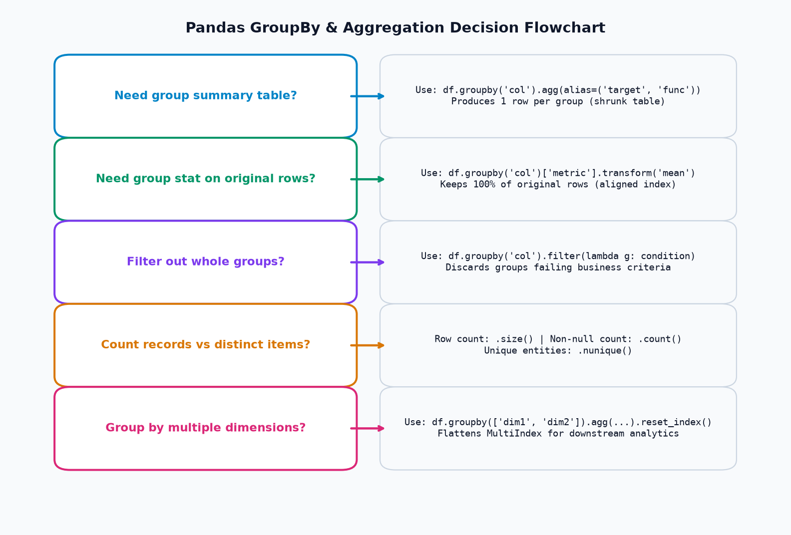
Core Method Architectural Comparison Matrix
| Method | Input Shape | Output Shape | Row Alignment | Modifies DF? | Primary Use Case | Speed / Efficiency |
|---|---|---|---|---|---|---|
.agg() |
$M$ rows per group | $1$ row per group ($N$ total) | Collapsed to Group Keys | Returns new summary DF | Executive KPI summaries, sums, averages, multi-metric reports | ⚡ Highly Vectorized (Fastest) |
.transform() |
$M$ rows per group | $M$ rows (same as input) | Original DataFrame index | No (used to create new column) | Broadcasting group stats, row deviations, percentage shares | ⚡ Highly Vectorized (Fast) |
.filter() |
$M$ rows per group | $K \le M$ rows | Original DataFrame index | Returns filtered subset of rows | Dropping small groups (e.g. len < 3), low-performing clusters | ⚙️ Python Loop over Groups |
.apply() |
$M$ rows per group | Arbitrary (Scalar, Series, DF) | Depends on function output | Returns arbitrary structure | Complex multi-column custom logic, Top-N ranking per group | 🐢 Slowest (Python Overhead) |
Visual Quick Reference Cheat Sheet
Aapki quick offline revision ke liye complete GroupBy & Aggregation cheat sheet:
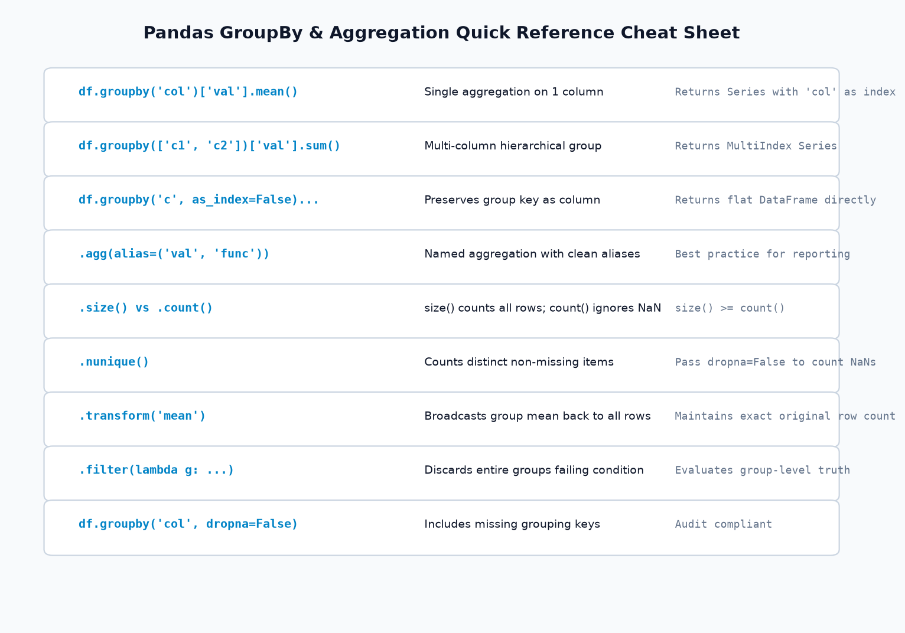
The Five Golden Rules of GroupBy
- Rule 1 (Flat Index): Hamesha
as_index=Falseya end mein.reset_index()use karein taaki output standard 2D table bane aur plotting/exporting mein error na aaye. - Rule 2 (Named Aggregation): MultiIndex tuple headers se bachne ke liye hamesha modern syntax
.agg(alias=('column', 'func'))use karein. - Rule 3 (Broadcasting with Transform): Jab bhi original DataFrame ke har row ko uske group ke summary se compare karna ho, bina soche
.transform()ka sahara lein. - Rule 4 (Data Audit with Size vs Count): Missing values detect karne ke liye
group.size() - group['col'].count()inspect karein. - Rule 5 (Missing Key Awareness): Agar grouping column mein nulls ho sakte hain, toh
dropna=Falsepass karein taaki records silently gayab na hon.
15. Common Beginner Pitfalls & Traps
GroupBy aur Aggregation ke dauraan beginners aksar aisi galtiyan karte hain jinse code silent bugs paida karta hai ya performance drop hoti hai. Neeche 10 sabse common traps aur unke production-grade solutions diye gaye hain:
| Trap # | Common Mistake | Underlying Cause | Bug Symptom / Error | Correct Production Solution |
|---|---|---|---|---|
| 1 | Missing as_index=False |
GroupBy column automatically index ban jati hai | KeyError: 'dept' when filtering or exporting |
df.groupby('dept', as_index=False) |
| 2 | Confusing .size() with .count() |
count() drops nulls; size() counts physical rows |
Under-counting total records in dirty datasets | Use size() for row count; count() for valid values |
| 3 | Using .agg() for new column creation |
agg() shrinks rows to group count $N$ |
ValueError: cannot reindex on an axis with duplicate labels |
Use df['new_col'] = df.groupby().transform() |
| 4 | Using boolean indexing instead of .filter() |
Trying df[df.groupby('dept').mean() > 80] |
Shape mismatch or index alignment failure | Use df.groupby('dept').filter(lambda g: g['marks'].mean() > 80) |
| 5 | Grouping by Unique ID (e.g. order_id) |
Grouping keys have unique values per row | Massive memory spike, $N$ groups of size 1 | Group only by categorical dimensions (Dept, City, Category) |
| 6 | Forgetting dropna=False on null keys |
Default dropna=True drops null key rows silently |
Total financial sums do not match raw data totals | Always specify df.groupby(..., dropna=False) for audits |
| 7 | Aggregating string columns with sum() |
Strings get concatenated into giant text strings | Memory blowup or nonsense concatenated strings | Specify numeric columns explicitly: df.groupby('dept')['marks'].sum() |
| 8 | Overusing .apply() for simple statistics |
apply() runs un-vectorized Python loops |
Code runs 10x to 50x slower on 100k+ rows | Use vectorized methods like mean(), sum(), agg() |
| 9 | Nested MultiIndex Column Access Confusion | Passing lists to .agg(['mean', 'max']) creates tuples |
df['marks'] returns a DataFrame instead of Series |
Use Named Aggregation or flatten with df.columns = ['_'.join(c) for c in df.columns] |
| 10 | Sorting raw data before groupby() unnecessarily |
Sorting entire DataFrame before grouping wastes CPU | Slow query execution without affecting final aggregation | Group first, then sort the aggregated summary table |
Trap Walkthrough 1: Creating New Columns with agg() vs transform()
import pandas as pd
df = pd.DataFrame({"dept": ["CSE", "CSE", "IT"], "marks": [80, 90, 85]})
# ❌ WRONG: Trying to assign agg() result back to df (Shape Mismatch!)
# df["avg"] = df.groupby("dept")["marks"].agg("mean") # Error or wrong alignment!
# ✅ CORRECT: Use transform() to broadcast group mean to all 3 rows
df["avg"] = df.groupby("dept")["marks"].transform("mean")
print(df)Trap Walkthrough 2: String Summation Catastrophe
import pandas as pd
df_names = pd.DataFrame({
"dept": ["CSE", "CSE"],
"name": ["Aman", "Priya"],
"marks": [85, 90]
})
# ❌ WRONG: df.groupby('dept').sum() will concatenate names into 'AmanPriya'!
# ✅ CORRECT: Explicitly select target numeric column or use numeric_only=True
summary_safe = df_names.groupby("dept")["marks"].sum().reset_index()
print(summary_safe)16. Practice Exercises & Guided Mini-Project
Apne practical skills ko test karne ke liye neeche diye gaye 20 exercises solve karein. Har sawal ke niche detailed collapsible solution button diya gaya hai. Pehle khud se code run karein, fir solution verify karein!
Category 1: Beginner Drills (5 Questions)
Drill 1: Basic Single-Column Group Mean
Question: Ek DataFrame jisme city aur temperature diye gaye hain, har city ka average temperature calculate karein using groupby().
import pandas as pd
df = pd.DataFrame({
"city": ["Delhi", "Mumbai", "Delhi", "Mumbai"],
"temp": [32, 28, 36, 30]
})
res = df.groupby("city", as_index=False)["temp"].mean()
print(res)Drill 2: Total Units Sold by Category
Question: Categories ["Tech", "Food", "Tech"] aur units=[10, 5, 20] ka total sum nikaalein flat DataFrame format mein.
import pandas as pd
df = pd.DataFrame({"cat": ["Tech", "Food", "Tech"], "units": [10, 5, 20]})
summary = df.groupby("cat")["units"].sum().reset_index()
print(summary)Drill 3: Maximum and Minimum Price per Category
Question: Named aggregation use karke har category ka max_price aur min_price nikaalein.
import pandas as pd
df = pd.DataFrame({"cat": ["A", "A", "B"], "price": [100, 300, 500]})
ans = df.groupby("cat").agg(max_p=("price", "max"), min_p=("price", "min")).reset_index()
print(ans)Drill 4: Row Count per Department with size()
Question: Har department mein kitne records hain, size() function se count karein aur count column ka naam 'headcount' rakhein.
import pandas as pd
df = pd.DataFrame({"dept": ["HR", "IT", "IT", "HR", "IT"]})
res = df.groupby("dept").size().reset_index(name="headcount")
print(res)Drill 5: First and Last Record per Group
Question: GroupBy ke .first() aur .last() methods se group ka pehla aur aakhiri record extract karein.
import pandas as pd
df = pd.DataFrame({
"team": ["Alpha", "Alpha", "Beta", "Beta"],
"score": [10, 20, 50, 90]
})
print("--- First Entries ---")
print(df.groupby("team").first())
print("\n--- Last Entries ---")
print(df.groupby("team").last())Category 2: Intermediate Challenges (5 Questions)
Drill 6: Two-Level Hierarchical Grouping (Branch × Gender)
Question: Department aur Gender dono par group karke average salary calculate karein aur MultiIndex ko standard columns mein convert karein.
import pandas as pd
df = pd.DataFrame({
"dept": ["IT", "IT", "HR", "HR"],
"gender": ["M", "F", "M", "F"],
"salary": [60000, 65000, 45000, 48000]
})
res = df.groupby(["dept", "gender"])["salary"].mean().reset_index()
print(res)Drill 7: Broadcasting Group Mean with transform()
Question: Har employee ki salary me se uske department ki average salary subtract karke diff_from_avg column banayein.
import pandas as pd
df = pd.DataFrame({
"dept": ["Sales", "Sales", "IT", "IT"],
"salary": [30000, 50000, 70000, 90000]
})
df["dept_avg"] = df.groupby("dept")["salary"].transform("mean")
df["diff_from_avg"] = df["salary"] - df["dept_avg"]
print(df)Drill 8: Filtering Groups by Average Threshold
Question: Sirf un categories ke saare rows retain karein jinka average score 80 se bada ho using .filter().
import pandas as pd
df = pd.DataFrame({
"batch": ["B1", "B1", "B2", "B2"],
"score": [85, 95, 60, 70]
})
# B1 avg = 90 (> 80), B2 avg = 65 (<= 80)
filtered = df.groupby("batch").filter(lambda g: g["score"].mean() > 80)
print(filtered)Drill 9: Distinct Customer Count with nunique()
Question: Ek store dataset me har region ke unique customers aur total order count ek saath aggregate karein.
import pandas as pd
df = pd.DataFrame({
"region": ["North", "North", "North", "South"],
"cust_id": ["C1", "C1", "C2", "C3"]
})
res = df.groupby("region").agg(
orders=("cust_id", "count"),
unique_cust=("cust_id", "nunique")
).reset_index()
print(res)Drill 10: Retaining Missing Group Keys with dropna=False
Question: Jab branch column mein None ho, tab bhi unka row count retain karein.
import pandas as pd
df = pd.DataFrame({
"branch": ["Delhi", None, "Delhi", None],
"sales": [100, 200, 150, 250]
})
res = df.groupby("branch", dropna=False)["sales"].sum().reset_index()
print(res)Category 3: Practical Real-World Challenges (3 Questions)
Challenge 11: Percentage Share of Category Revenue
Scenario: Har product ka uski parent category ke total revenue mein kitna percentage contribution hai, calculate karein.
import pandas as pd
df = pd.DataFrame({
"category": ["Electronics", "Electronics", "Clothing", "Clothing"],
"product": ["Phone", "Case", "Shirt", "Socks"],
"sales": [8000, 2000, 1500, 500]
})
df["cat_total"] = df.groupby("category")["sales"].transform("sum")
df["pct_share"] = (df["sales"] / df["cat_total"]) * 100
print(df[["category", "product", "sales", "pct_share"]])Challenge 12: Finding Top Earner per Department
Scenario: Har department ka highest salary employee find karne ke liye .sort_values() aur .groupby().head(1) ya .first() use karein.
import pandas as pd
df = pd.DataFrame({
"dept": ["IT", "IT", "IT", "HR", "HR"],
"emp": ["A", "B", "C", "D", "E"],
"salary": [50000, 80000, 65000, 40000, 55000]
})
top_earners = df.sort_values(by="salary", ascending=False).groupby("dept").head(1)
print(top_earners.reset_index(drop=True))Challenge 13: Normalizing (Min-Max Scaling) within Groups
Scenario: Har department ke andar student marks ko 0 se 1 ke beech min-max scale karein: (marks - min) / (max - min).
import pandas as pd
df = pd.DataFrame({
"dept": ["CSE", "CSE", "CSE"],
"marks": [60, 80, 100]
})
min_val = df.groupby("dept")["marks"].transform("min")
max_val = df.groupby("dept")["marks"].transform("max")
df["normalized"] = (df["marks"] - min_val) / (max_val - min_val)
print(df)Category 4: Multiple-Choice Questions (MCQs) (5 Questions)
MCQ 1: What is the return type of df.groupby('col')?
Question: Jab aap g = df.groupby('col') execute karte hain bina kisi aggregation method ke, toh type(g) kya hota hai?
- A)
pandas.DataFrame - B)
pandas.core.groupby.generic.DataFrameGroupBy - C)
pandas.Series - D)
dict
Explanation: groupby() ek lazy evaluator hai jo DataFrameGroupBy object return karta hai. Jab tak koi aggregation method (jaise mean(), sum()) call nahi hota, tab tak actual calculation execute nahi hoti.
MCQ 2: Which function counts rows including NaN values?
Question: Group ke andar missing values (NaN) ko include karke total physical rows count karne ke liye kaunsa method use hota hai?
- A)
.count() - B)
.sum() - C)
.size() - D)
.len()
Explanation: .size() pure group ki total physical rows count karta hai chahe cell NaN ho ya valid. Jabki .count() sirf valid non-null values count karta hai.
MCQ 3: Output shape difference between agg() and transform()
Question: Agar original DataFrame mein 100 rows aur 4 unique categories hain, toh transform() aur agg() ka output kitni rows return karega?
- A) Both return 4 rows
- B) Both return 100 rows
- C) agg() returns 4 rows; transform() returns 100 rows
- D) agg() returns 100 rows; transform() returns 4 rows
Explanation: agg() rows ko collapse karke unique groups (4 rows) banata hai. transform() calculation ko broadcast karke exact original row count (100 rows) maintain karta hai.
MCQ 4: How to retain missing values in the grouping key?
Question: Agar grouping column mein NaN values hain aur aap chahte hain ki woh drop na hon, toh kaunsa parameter pass karna padega?
- A)
keep_na=True - B)
dropna=False - C)
fillna=True - D)
ignore_null=False
Explanation: Pandas 1.1+ mein df.groupby("col", dropna=False) use karne se missing keys ek alag category (NaN group) ki tarah preserve hoti hain.
MCQ 5: What does GroupBy.filter() return?
Question: df.groupby('dept').filter(lambda g: len(g) >= 3) kya return karta hai?
- A) Ek summary table jisme har department ka count hota hai
- B) Original DataFrame ka ek subset jisme sirf qualifying groups ke saare rows hote hain
- C) Ek boolean Series
- D) Ek dictionary of DataFrames
Explanation: filter() summary table nahi banata, balki original DataFrame ki rows filter karta hai. Jo groups condition satisfy karte hain, unki saari original rows preserve ho jati hain.
Category 5: Code Debugging Exercises (2 Exercises)
Debugging 1: Fixing MultiIndex Column Access Bug
Buggy Code: Ek student ne multiple aggregation functions use kiye aur direct column access karne par KeyError aa gaya:
# ❌ BUGGY CODE
import pandas as pd
df = pd.DataFrame({"dept": ["CSE", "IT"], "marks": [80, 90]})
summary = df.groupby("dept").agg(["mean", "max"])
# print(summary["mean"]) # Raises KeyError: 'mean'Root Cause: agg(["mean", "max"]) MultiIndex columns create karta hai: [("marks", "mean"), ("marks", "max")]. Direct 'mean' column exist hi nahi karta!
# ✅ CORRECTED CODE: Modern Named Aggregation
summary_fixed = df.groupby("dept").agg(
avg_marks=("marks", "mean"),
max_marks=("marks", "max")
).reset_index()
print(summary_fixed["avg_marks"]) # Works perfectly!Debugging 2: Fixing Silent Missing Data Under-Count
Buggy Code: Ek auditor ne transactions count karne ke liye count() use kiya, lekin customer phone numbers missing hone ki wajah se order count galat aa gaya:
# ❌ BUGGY CODE
import pandas as pd
import numpy as np
df_orders = pd.DataFrame({
"store": ["S1", "S1", "S1"],
"phone": ["9876543210", np.nan, np.nan]
})
# Auditor used count() on phone: returns 1 instead of 3!
wrong_orders = df_orders.groupby("store")["phone"].count()Root Cause: count() sirf non-null entries count karta hai. Agar target column mein NaN hai, toh total orders under-report ho jayenge!
# ✅ CORRECTED CODE: Use size() for total transactions
correct_orders = df_orders.groupby("store").size().reset_index(name="total_orders")
print(correct_orders)Capstone Mini-Project: College Academic & Store Performance Dashboard
Aapko ek dual-track business problem di gayi hai: College management aur E-commerce store dono ke data ko merge karke executive level KPI reports generate karni hain:
🚀 View Complete Capstone Mini-Project Solution
import pandas as pd
# 1. Academic Performance Matrix
df_academic = pd.DataFrame({
"dept": ["CSE", "CSE", "IT", "IT", "ECE"],
"student": ["Aman", "Priya", "Sneha", "Aditya", "Rohan"],
"marks": [85, 92, 82, 94, 84]
})
academic_kpi = df_academic.groupby("dept").agg(
headcount=("student", "count"),
batch_mean=("marks", "mean"),
batch_top=("marks", "max")
).reset_index().sort_values(by="batch_mean", ascending=False)
print("=== ACADEMIC EXCELLENCE LEADERBOARD ===")
print(academic_kpi.to_string(index=False))17. Summary, Glossary & Next Steps
Congratulations! Aapne Pandas ka sabse powerful aur industrial analytical tool—GroupBy & Aggregation—master kar liya hai. Data cleaning se lekar financial reporting aur machine learning feature engineering tak, har jagah GroupBy ka use hota hai.
Topic 13 Core Concepts Recap
| Concept | Key Function / Syntax | Core Functionality |
|---|---|---|
| Split-Apply-Combine | df.groupby("key") |
Data ko discrete buckets mein todna, calculate karna, aur result stitch karna |
| Flat Index Output | as_index=False or .reset_index() |
Group key ko index banne se rok kar standard 2D table format dena |
| Counting Functions | .size(), .count(), .nunique() |
Total rows vs valid non-null cells vs distinct values ki counting |
| Named Aggregation | .agg(alias=('col', 'func')) |
Clean column names ke saath multiple aggregations calculate karna |
| Transformation | .transform("func") |
Original row count maintain karke group statistics broadcast karna |
| Group Filtering | .filter(lambda g: condition) |
Group-level criteria ke basis par original DataFrame rows filter karna |
| Missing Key Handling | dropna=False |
Grouping keys ke andar NaN values ko alag group ki tarah preserve karna |
| Summary Sorting | .sort_values(by=..., ascending=False) |
Aggregated metrics ke according categories ko descending rank order dena |
Technical Glossary (10 Essential Terms)
| Term | Definition & Context |
|---|---|
| Split-Apply-Combine | Hadley Wickham ka coined statistical pattern: data ko categorical keys par split karna, independent mathematical functions apply karna, aur unified summary DataFrame mein combine karna. |
| Aggregation | Ek multi-row group ko summarize karke single scalar value (mean, sum, min, max) produce karne wali computational operation. |
| Transformation | Ek aisi operation jo input group ke har record ke liye calculated value return karti hai, preserving 100% of the original row count and DataFrame index alignment. |
| Filtration | Pure group (as a unit) par boolean evaluation karke qualify ya discard karne ka mechanism using GroupBy.filter(). |
| Named Aggregation | Pandas 0.25+ ka modern declarative syntax: .agg(output_col=('input_col', 'aggregation_func')) jo MultiIndex tuple headers ko eliminate karta hai. |
| DataFrameGroupBy | Pandas ka intermediate lazy object jo split data ke indices ko store karta hai bina kisi eager memory copy ke. |
| MultiIndex | DataFrame ke rows ya columns mein hierarchical n-level nested labels jo multi-column grouping ke dauraan create hote hain. |
| as_index | groupby() ka boolean argument; agar False ho toh grouping columns index banne ki bajaye ordinary data columns ban kar rehti hain. |
| Broadcasting | Group-level statistical metrics (jaise department average marks) ko har individual student row tak horizontally stretch karke align karna. |
| dropna=False | Pandas 1.1+ parameter jo grouping keys mein NaN hone par bhi unka category group create karta hai, preventing silent data leakage. |
Ab tak humne single DataFrames ke andar data ko transform, clean, aur group karna seekha.
Agli class mein hum real-world data engineering ka core skill seekhenge: Topic 14: Merging & Joining DataFrames!
Hum SQL-style Inner Join, Left Join, Right Join, Outer Join, pd.merge(), pd.concat(), aur primary-foreign key relationships ko visually master karenge!